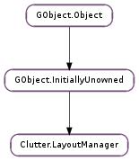

| Subclasses: | Clutter.BinLayout, Clutter.BoxLayout, Clutter.FixedLayout, Clutter.FlowLayout, Clutter.GridLayout, Clutter.TableLayout |
|---|
| allocate(container, allocation, flags) | |
| begin_animation(duration, mode) | |
| child_get_property(container, child, property_name) | |
| child_set_property(container, child, property_name, value) | |
| end_animation() | |
| find_child_property(name) | |
| get_animation_progress() | |
| get_child_meta(container, actor) | |
| get_preferred_height(container, for_width) | |
| get_preferred_width(container, for_height) | |
| layout_changed() | |
| list_child_properties() | |
| set_container(container) |
None
| Name | Parameters | Return | Description |
|---|---|---|---|
| layout-changed | The ::layout-changed signal is emitted each time a layout manager has been changed. Every Clutter.Actor using the manager instance as a layout manager should connect a handler to the ::layout-changed signal and queue a relayout on themselves: .. code-block:: c static void layout_changed (ClutterLayoutManager *manager, ClutterActor *self) { clutter_actor_queue_relayout (self); } ... self->manager = g_object_ref_sink (manager); g_signal_connect (self->manager, “layout-changed”, G_CALLBACK (layout_changed), self); Sub-classes of Clutter.LayoutManager that implement a layout that can be controlled or changed using parameters should emit the ::layout-changed signal whenever one of the parameters changes, by using Clutter.LayoutManager.layout_changed (). |
| Name | Type | Access |
|---|---|---|
| parent_instance | GObject.InitiallyUnowned | r |
Bases: GObject.InitiallyUnowned
The Clutter.LayoutManager structure contains only private data and should be accessed using the provided API
| Parameters: |
|
|---|
Allocates the children of container given an area
See also Clutter.Actor.allocate ()
| Parameters: | |
|---|---|
| Returns: | The Clutter.Alpha created by the layout manager; the returned instance is owned by the layout manager and should not be unreferenced |
| Return type: |
Begins an animation of duration milliseconds, using the provided easing mode
The easing mode can be specified either as a Clutter.AnimationMode or as a logical id returned by Clutter.Alpha.register_func ()
The result of this function depends on the manager implementation
| Parameters: |
|
|---|
Gets a property on the Clutter.LayoutMeta created by manager and attached to a child of container
The GObject.Value must already be initialized to the type of the property and has to be unset with GObject.Value.unset () after extracting the real value out of it
| Parameters: |
|
|---|
Sets a property on the Clutter.LayoutMeta created by manager and attached to a child of container
Ends an animation started by Clutter.LayoutManager.begin_animation ()
The result of this call depends on the manager implementation
| Parameters: | name (str) – the name of the property |
|---|---|
| Returns: | a GObject.ParamSpec describing the property, or None if no property with that name exists. The returned GObject.ParamSpec is owned by the layout manager and should not be modified or freed |
| Return type: | GObject.ParamSpec |
Retrieves the GObject.ParamSpec for the layout property name inside the Clutter.LayoutMeta sub-class used by manager
| Returns: | the progress of the animation |
|---|---|
| Return type: | float |
Retrieves the progress of the animation, if one has been started by Clutter.LayoutManager.begin_animation ()
The returned value has the same semantics of the Clutter.Alpha :alpha value
| Parameters: |
|
|---|---|
| Returns: | a Clutter.LayoutMeta, or None if the Clutter.LayoutManager does not have layout properties. The returned layout meta instance is owned by the Clutter.LayoutManager and it should not be unreferenced |
| Return type: |
Retrieves the Clutter.LayoutMeta that the layout manager associated to the actor child of container, eventually by creating one if the Clutter.LayoutManager supports layout properties
| Parameters: |
|
|---|---|
| Return type: | min_height_p: float, nat_height_p: float |
Computes the minimum and natural heights of the container according to manager.
See also Clutter.Actor.get_preferred_height ()
| Parameters: |
|
|---|---|
| Return type: | min_width_p: float, nat_width_p: float |
Computes the minimum and natural widths of the container according to manager.
See also Clutter.Actor.get_preferred_width ()
Emits the Clutter.LayoutManager ::layout-changed signal on manager
This function should only be called by implementations of the Clutter.LayoutManager class
| Returns: | the newly-allocated, None-terminated array of GObject.ParamSpec s. Use GLib.free () to free the resources allocated for the array |
|---|---|
| Return type: | [GObject.ParamSpec] |
Retrieves all the GObject.ParamSpec s for the layout properties stored inside the Clutter.LayoutMeta sub-class used by manager
| Parameters: | container (Clutter.Container or None) – a Clutter.Container using manager |
|---|
If the Clutter.LayoutManager sub-class allows it, allow adding a weak reference of the container using manager from within the layout manager
The layout manager should not increase the reference count of the container